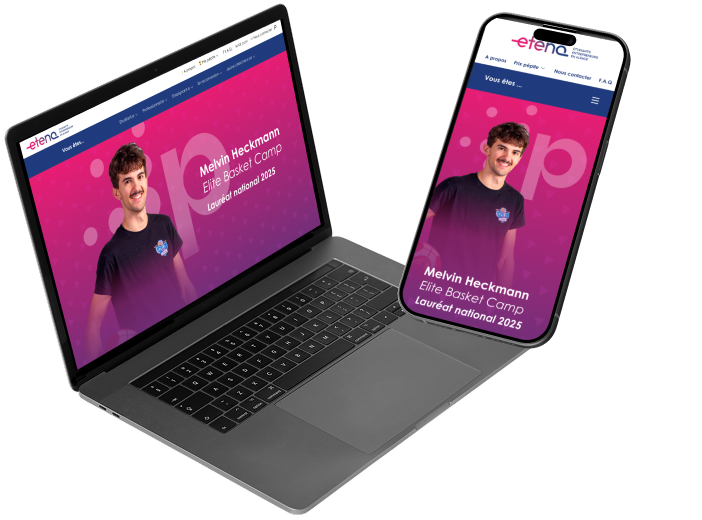
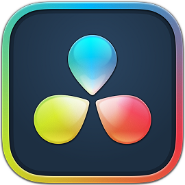
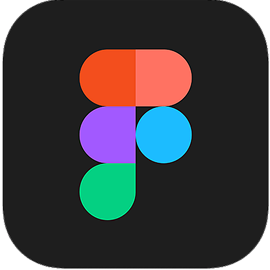
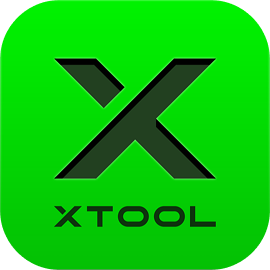
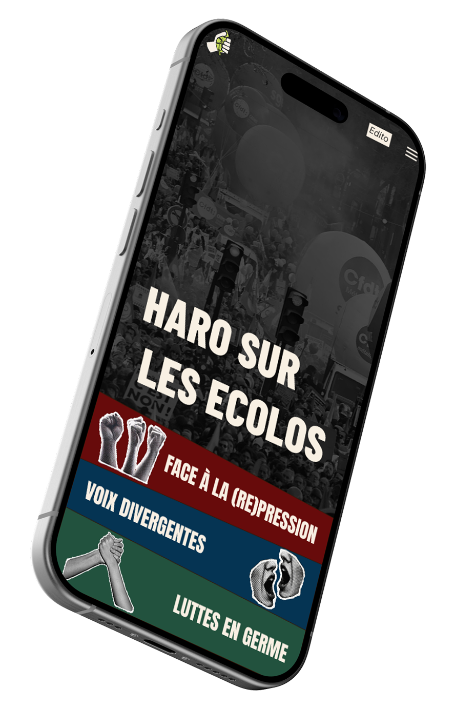
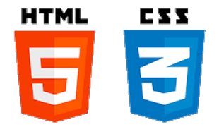
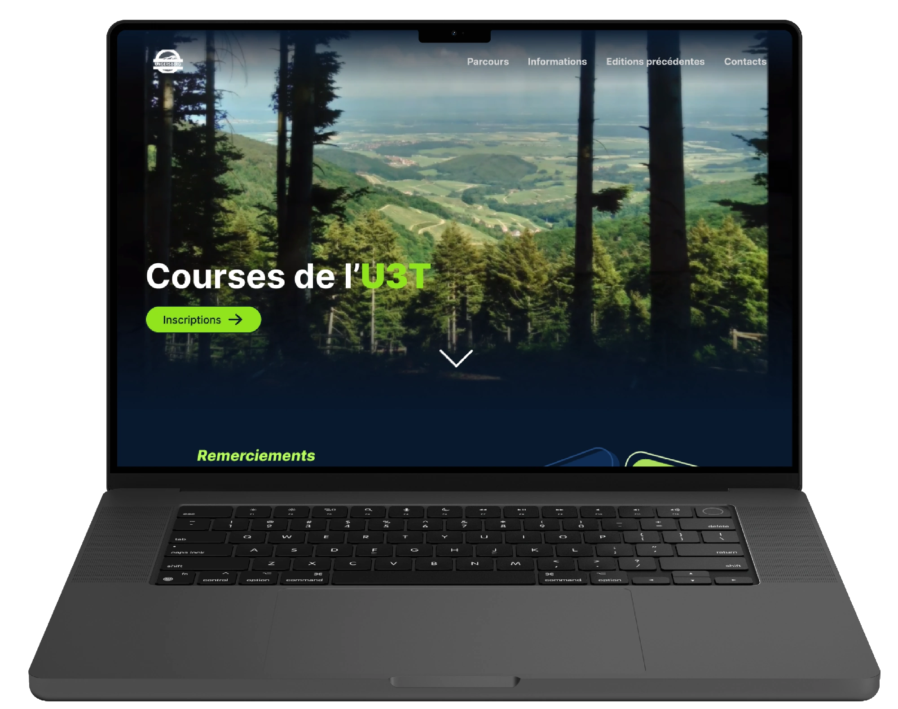
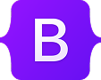

Prix Pépite
Création d'une communication multicanale pour les candidats au concours d'entrepreneuriat "Prix Pépite 2025"
Client : Pépite Etena
Stratégie de communication
UI/UX Design
Création audiovisuelle
Présentation du projet
A l'occasion du concours d'étudiants entrepreneur "Prix Pépite", j'ai participé à la création d'une campagne de communication autour d'un des 4 lauréats sélectionné par notre commanditaire, la structure Pépite Etena. Durant ce projet :
- J'ai imaginé les pages présentant le Prix Pépite et les 4 lauréats, à intégrer sur le site de Pépite Etena,
- J'ai écris et tourné des vidéos à destination des réseaux sociaux (TikTok, Instagram, Youtube...) dont une disponible sur leur site internet,
- Et en bonus, j'ai aidé à créer un trophée à remettre aux lauréats à la fin du concours.
Ci-dessus, les maquettes que j'ai créé et qui ont été partiellement intégrées par les équipes de Pépite Etena à la section "Prix Pépite" de leur site internet ➔.
Ressources utilisés



Ce projet a été mené en collaboration avec les équipes de Pépite Etena, et j'ai pris grand plaisir à prioriser les échanges avec chaque partie prenante pour faire avancer le projet dans la bonne direction.

Haro sur les écolos
Design, développement et mise en production d'un webdocumentaire pour une institution strasbourgeoise de journalisme.
Client : CUEJ
Développement web
UI/UX Design
Gestion de projet
Présentation du projet
Comme chaque année, l'IUT de Haguenau et le Centre Universitaire d'Enseignement du Journalisme (CUEJ) collaborent pour créer un webdocumentaire. J'ai été en charge de gérer un groupe de travail pour imaginer, en concertation avec les étudiants du CUEJ , le site web présentant leurs articles de presse. Le projet nous a permis de :
- Lister les contenus à présenter sur le site,
- Développer des wireframe ergonomiques pour les lecteurs, proposant une lecture non linéaire des articles,
- Imaginer une identité graphique traduisant les intentions du webdocumentaire,
- Développer des maquettes graphiques et les intégrer à l'aide de Wordpress.
Les images ci-dessus présentent la page d'accueil, un des 3 thèmes du site, et la tête d'un article. Le webdocumentaire est disponible sur le site du CUEJ ➔.
Ressources utilisés

Le développement du webdocumentaire a été réalisé en priorisant les échanges avec les étudiants et professeurs du CUEJ afin d'obtenir un produit reflétant au maximum leurs envies.

Courses de l'U3T
Refonte du site internet des courses natures de l'Ungersberg 3 Terroirs
Client : U3T
UI/UX Design
Développement web
Présentation du projet
Les courses de l'Ungersberg 3 Terroirs sont des courses organisées dans le village ou j'ai grandi. Appréciées pour leur ambiance célébrant l'esprit du trail, elles se sont développées au cours des années sans pour autant trahir leur identité. Pour cette 6ème édition, l'organisateur a souhaité faire peau neuve pour son site internet. Au programme :
- Tri et organisation du contenu déjà existant,
- Création des wireframe et des parcours utilisateurs,
- Création des maquettes graphiques,
- Montage de vidéos et traitement d'images,
- Intégration du site en bootstrap.
Ci dessus la transformation de la landing page des courses de l'U3T, ainsi qu'une page de présentation d'un des 3 parcours. Découvrez le site de l'U3T ➔.
Ressources utilisés

Le site répond aujourd'hui de manière plus complète aux demandes de l'organisateur et des coureurs.